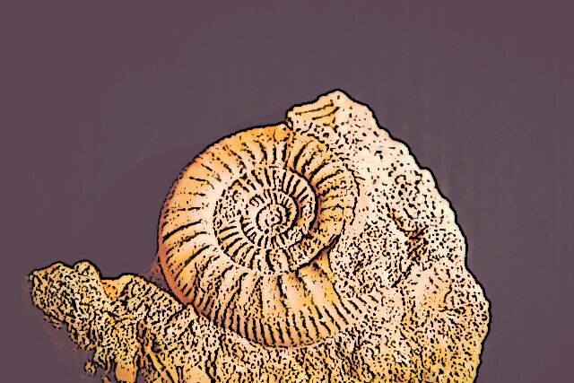
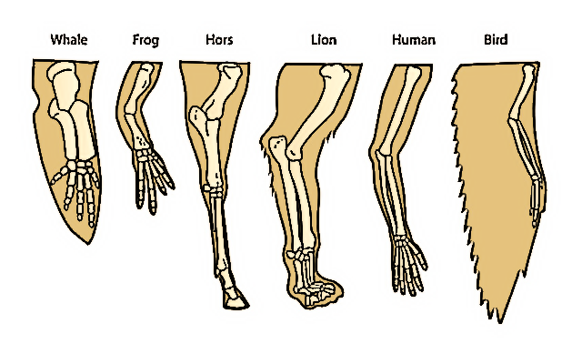

Evidence of Evolution in General 宏观上的进化论依据
There are actually a lot of evidence for the theory of evolution. Some
of them are especially convincing. If you want to think of getting an
evidence for evolution, where would you start? How about going to the
past and take a look? Or how about looking for patterns between species?
Or even try an evolution experiment by yourself. Fortunately, the
scientists all around the world have already tried these methods for us.
We only need to observe to see the evidence.
实际上进化论有很多证据。其中有些相当有说服力。试想一下，如果你想得到进化论的证据你会从哪里开始呢？到过去看一看怎么样？或者寻找物种之间的相同的规律？
又或者自己尝试一个进化实验？幸运的是，世界各地的科学家们已经为我们尝试了这些方法。我们只需要细心观察一下就能看到证据了。
Fossil Records 化石证据
----The best and only way to look at a organism of the past is to look
at a fossil record. The property of recording organisms form long time
ago made fossil a very strong support for the evolution theory. Usually
a complete process of evolution takes a very long time especially with
organisms of longer life span. By identifying similar characteristics,
sicentists can deduce the relationship of certain fossils to nowdays
creatures.
----观察过去的生物体的最好和唯一的方法就是看化石记录。记录很久以前的生物体的特性使得化石成为进化论的一个非常有力的支持。通常一个完整的进化过程需要很长的时间，
尤其是寿命较长的生物。通过识别类似的特征，科学家可以推断出某些化石与现在的生物的关系。

Structural Evidence 结构证据
----Structural evidence relies on the findings of fossil records.
However, its importance in providing evidence lead me to present it
here. One of the famous structural evidence is the pentadactyl limb
structure(meaning a limb with five fingers). If you look at your hand,
you might notice that you also have a pentadactyl limb. The reason that
it is evidence for evolution is that a lot of other very different
organisms also have this similar structure. Animals such as bats, moles,
horses, and even porpoise all have the evidence of five fingers. This
implies that these animals might come from a similar ancestor. This type
of structure is called homologous structure meaning structure of same
structure but different usage.
----虽然结构证据依赖于化石记录的发现，但是我任然要强调这个十分重要的证据。其中一个著名的结构性证据是五爪动物的肢体结构（指有五个手指的肢体）。
如果你看一下你的手，你可能会
注意到你也有一个五指的肢体。之所以说它是进化的证据，是因为许多其他非常不同的生物体也有这种类似的结构。
蝙蝠、鼹鼠、马、甚至鼠海豚等动物都有五指的证据。这意味着，这些动物可能来自一个类似的祖先。这种类型的结构被称为同源结构，意思是结构相同但用途不同。

Selective Breeding 人工育种
----Selective breeding is a technique used on domestic animals. The
practice of breeding animals started very early in the mankind history.
This also provide evidence for evolution, but this time the factor
determine the passed on characteristics is not the characteristics
advantageous for survival but the characteristics that human wish to
pass on.
----选择性育种是一种用于家畜的技术。饲养动物的做法在人类历史上很早就开始了。这也为进化提供了证据，
但这一次决定传承特征的因素不是对生存有利的特征，而是人类希望传承的特征。